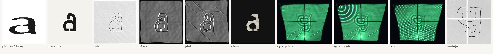
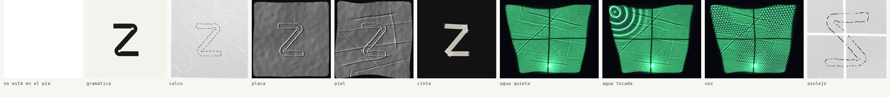

a celda 8 · hallada

- pie
- «erosionado», línea 2, testigo 8 de 29; opinión 1,0 %
- placa
- 18,6 min, 325 mm de surco, 0 roturas
- piel
- hombro, 6 pliegues
- cinta
- 10 tramos, 6 pliegues
- copia
- legible hasta la 23 de 26
- agua
- contraste 2,30
- voz
- «moverse como se mueve la piedra», 153 Hz
- pared
- 2 juntas
z celda 32 · reconstruida: hipótesis sobre hipótesis

- receta
- dos barras y una diagonal, redondeadas al radio de la chapa, con alivio en los dos rincones
- placa
- 83,1 min, 303 mm de surco, 1 rotura
- piel
- muslo, 7 pliegues
- cinta
- 5 tramos, 4 pliegues
- copia
- legible hasta la 22 de 26
- agua
- contraste 1,04
- voz
- «cada vuelta pasa por el agua», 171 Hz
- pared
- 2 juntas